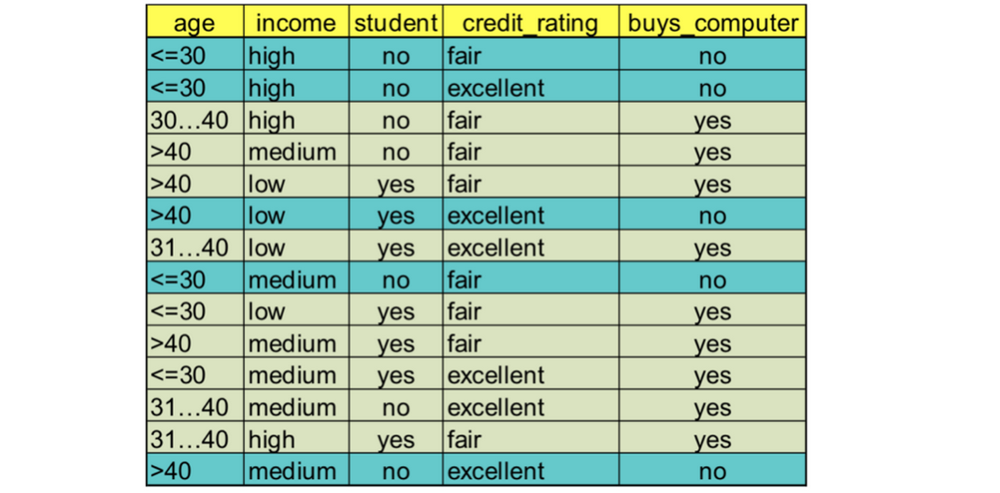
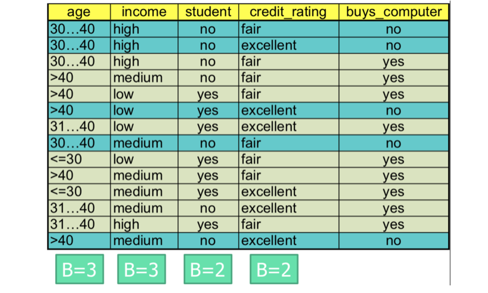
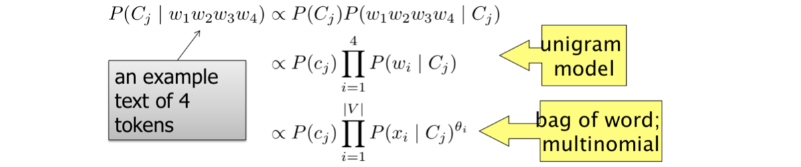

Abstract:
- Bayesian Theorem
- Naïve Bayes Classifier
- Smoothing
Why Bayesian Classification?
- Decision tree classifiers predict the class label of y.
- E.g., it is yes or no.
- Bayesian classifiers calculate probabilities for hypothesis.
- E.g., the probabilities to be yes and no.
- Probabilistic learning: Calculate explicit probabilities for hypothesis, among the most practical approaches to certain types of learning problems.
- Incremental(递增的): Each training example can incrementally increase/decrease the probability that a hypothesis is correct. Prior knowledge can be combined with observed data.
- Probabilistic prediction: Predict multiple hypotheses, weighted by their probabilities
- Standard: Even when Bayesian methods are computationally intractable(难对付的), they can provide a standard of optimal decision making against which other methods can be measured
Bayesian Theorem
- Let X be a data sample whose class label is unknown
- Let h be hypothesis that X belongs to class C
- For classification problems, determine P(h|X): the probability that the hypothesis holds given the observed data sample X
- P(h): prior probability of hypothesis h(i.e. the initial probability before we observe any data, reflects the background knowledge)
- P(X): probability that sample data is observed
- P(X|h): probability of observing the sample X, given that the hypothesis holds
- Given training data X, posteriori probability of a hypothesis h, P(h|X) follows the Bayes theorem
- Informally, this can be written as posterior = likelihood * prior / evidence
posterior: P(h|X)
likelihood: P(X|h)
prior: P(h)
evidence: P(X) - MAP(maximum posteriori后期) hypothesis
Naïve Bayes Classifier
- Assumption: attributes are conditionally independent:
- The product of occurrence of say 2 elements x1 and x2,
given the current class is C, is the product of the probabilities of each element taken separately, given the same class P([x1,x2],C) = P(x1,C) * P(x2,C) - Greatly reduces the computation cost, only count the class distribution -> Only need to estimate P(xk | Ci)
Example:

Compute P(X|Ci) for each class
X=(age<=30 , income =medium, student=yes, credit_rating=fair)
P(age="<30" | buys_computer=“yes”) = 2/9=0.222
P(age="<30" | buys_computer=“no”) = 3/5 =0.6
P(income=“medium” | buys_computer=“yes”)= 4/9 =0.444
P(income=“medium” | buys_computer=“no”) = 2/5 = 0.4
P(student=“yes” | buys_computer="yes)= 6/9 =0.667
P(student=“yes” | buys_computer=“no”)= 1/5=0.2
P(credit_rating=“fair” | buys_computer=“yes”)=6/9=0.667
P(credit_rating=“fair” | buys_computer=“no”)=2/5=0.4
P(X|Ci) :
P(X|buys_computer=“yes”)= 0.222 x 0.444 x 0.667 x 0.0.667 =0.044
P(X|buys_computer=“no”)= 0.6 x 0.4 x 0.2 x 0.4 =0.019
P(X|Ci)* P(Ci) :
P(buys_computer=“yes”) = 9/14
P(buys_computer=“no”) = 5/14
P(X|buys_computer=“yes”) * P(buys_computer=“yes”)=0.028
P(X|buys_computer=“no”) * P(buys_computer=“no”)=0.007
So, X belongs to class “buys_computer=yes”
Smoothing
-
Pr[Xi = vj | Ck] could still be 0, if not observed in the training data
- makes Pr[Ck | X] = 0, regardless of other likelihood values of Pr[Ct = vt| Ck]
-
Add-1 Smoothing
- reserve a small amount of probability for
unseen probabilities - (conditional) probabilities of observed events have to be adjusted to make the total probability equals 1.0
- reserve a small amount of probability for
-
What’s the right value for B?
- B is used to make sure the total probability equals 1, ∑vj Pr[Xi =vj |Ck ]=1
- B = dom(Xi), i.e., # of values Xi can take. ->how many distinct values that X have
Example: Consider no instance of age<30 in the class

X=(age<=30 , income =medium, student=yes, credit_rating=fair)
P(age="<30" | buys_computer=“no”) = (0 +1) / (5 +3) = 0.125
P(income=“medium” | buys_computer=“no”) = (2 +1) / (5 +3) = 0.375
P(student=“yes” | buys_computer=“no”)= (1 +1) / (5 +2) = 0.286
P(credit_rating=“fair” | buys_computer=“no”)= (2 +1) / (5 +2) = 0.429
P(X|Ci) : P(X|buys_computer=“no”)= 0.125 x 0.375 x 0.286 x 0.429 = 0.00575
P(X|Ci)*P(Ci) : P(X|buys_computer=“no”) * P(buys_computer=“no”) = 0.00205
| Probabilities | Without Smoothing | With Smoothing |
|---|---|---|
| Pr[<=30 | No] | 0 / 5 | 1 / 8 |
| Pr[30…40 | No] | 3 / 5 | 4 / 8 |
| Pr[>=40 | No] | 2 / 5 | 3 / 8 |
不是只有probability=0的+1，所有的都+1
How to Handle Numeric Values
- Need to model the distribution of Pr[Xi | Ck]
- Method 1: Gaussian Naïve Bayes
- Method 2: Use binning to discretize the feature values
Text Classification
Naïve Bayes has been widely used in text classificiation (aka., text categorization)
- Document Classification
Assign labels to each document or web-page:- Labels are most often topics such as Yahoo-categories
e.g., “finance,” “sports,” “news>world>asia>business” - Labels may be genres
e.g., “editorials” “movie-reviews” “news” - Labels may be opinion on a person/product
e.g.,“like”,“hate”,“neutral” - Labels may be domain-specific
e.g., “interesting-to-me” : "not-interesting-to-me"
e.g., contains adult language:"doesn’t"
e.g., language identification: English, French, Chinese, …
e.g., search vertical: about Linux versus not
e.g.,“link spam”,“not link spam”
- Labels are most often topics such as Yahoo-categories
Basic Method
- Attributes are text positions, values are words.
- Assume the classification is independent of the
positions of the words- Use same parameters for each position
- Result is bag of words model
Learning
- From training corpus, extract V = Vocabulary
- Calculate required P(cj) and P(xk| cj) terms
- For each cj in C do
- docsj <- subset of documents for which the target class is cj
- Textj <- single document containing all docsj
- for each word xk in Vocabulary
- nk <- number of occurrences of xk in Textj
α : smoothing
- nk <- number of occurrences of xk in Textj
- For each cj in C do
Classifying
- positions <- all word positions in current document which contain tokens found in Vocabulary
- Return cNB, where
Time Complexity
-
Training Time: O(|D|Ld + |C||V|))
where Ld is the average length of a document in D.- Assumes V and all Di , ni, and nij pre-computed in O(|D|Ld)
time during one pass through all of the data. - Generally just O(|D|Ld) since usually |C||V| < |D|Ld
- Assumes V and all Di , ni, and nij pre-computed in O(|D|Ld)
-
Test Time: O(|C| Lt)
where Lt is the average length of a test document.- Very efficient overall, linearly proportional to the time needed to just read in all the data.
Multinomial(多项式) Model
sklearn.naive_bayes.MultinomialNB
- Based on a statistical language model, turns out to be the bag of words model if using unigrams(一元)
Underflow Prevention: log space
- Multiplying lots of probabilities, which are between 0 and 1 by definition, can result in floating-point underflow.
- Since log(xy) = log(x) + log(y), it is better to perform all computations by summing logs of probabilities rather than multiplying probabilities.
- Class with highest final un-normalized log probability score is still the most probable.
- Note that model is now just max of sum of weights…
Unigram and higher-order Language models in Information Retrieval
-
P(“abcd”)= P(a) * P(b | a) * P(c | a b) * P(d | a b c)
-
Unigram(一元) model: 0-th order Markov Model
- the probability of a word only depend on itself
- P(d | a b c) = P(d)
-
Bigram(二元) Language Models: 1st order Markov Model
- the probability of a word only depend on its previous token
- P(d | a b c) = P(d | c)
- P(a b c d) = P(a) * P(b | a) * P(c | b) * P(d | c)
-
The same with class-conditional probabilities,
- i.e., the unigram model
P(“a b c d” | C) = P (a | C) * P ( b | C) * P (c | C) * P (d | C)
- i.e., the unigram model

-
Essentially, the classification is independent of the
positions of the words- Use same parameters for each position
- Result is bag of words model
E.g. “to be or not to be”
xi To Be Or Not θi 2 2 1 1
Bernoulli(伯努利) Model
sklearn.naive_bayes.BernoulliNB
View a text as a set of tokens, a boolean vector in {0, 1}|V|, where V is the vocabulary.
- V={a,b,c,d,e} = {x1,x2,x3,x4,x5}
- Feature functions fi(text) = if text contains xi
- The feature functions extract a vector of {0, 1}|V| from any text
E.g.,“a b c d”, “d e b”
| a | b | c | d | e | C |
|---|---|---|---|---|---|
| 1 | 1 | 1 | 1 | 0 | + |
| 0 | 1 | 0 | 1 | 1 | - |
Two Models Compare
Naïve Bayes assumption
- Multinomial Naïve Bayes
- One feature Xi for each word pos in document
- feature’s values are all words in dictionary
- Value of Xi is the word in position i
- Naïve Bayes assumption:
- Given the document’stopic, word in one position in the document tells us nothing about words in other positions
- Second assumption:
- Word appearance does not depend on position P(Xi =w|c)=P(Xj =w|c)
for all positions i,j, word w, and class c - Just have one multinomial feature predicting all words
E.g., “to be or not to be” = “to to be be or not”
- Word appearance does not depend on position P(Xi =w|c)=P(Xj =w|c)
- One feature Xi for each word pos in document
- Multivariate(多变量) Bernoulli(伯努利)
- One feature Xw for each word in dictionary
- Xw = true in document d if w appears in d
- Naive Bayes assumption:
- Given the document’s topic, appearance of one word in the document tells us nothing about chances that another word appears
- This is the model used in the binary independence model in classic probabilistic relevance feedback in hand-classified data (Maron in IR was a very early user of NB)
Parameter estimation
- Multinomial model:
P(Xi = w|cj)= fraction of times in which word w appears across all documents of topic cj
- Multivariate Bernoulli model:
P(Xw = t|cj)= fraction of documents of topic cj in which word w appears
Classification
Multinomial model is almost always more effective in text applications!
Feature selection
- Multinomial model:
- means something different for multinomial NB. It means dictionary truncation(缩短)
- The multinomial NB model only has 1 feature
- Multivariate Bernoulli model:
In general feature selection is necessary for multivariate Bernoulli NB. Otherwise you suffer from noise, multi-counting.
Naïve Bayesian Classifier: Comments
- Advantages:
- Easy to implement
- Good results obtained in most of the cases
- Disadvantages
- Assumption: class conditional independence , therefore loss of accuracy
- Practically, dependencies exist among variables
- E.g., hospitals: patients: Profile: age, family history etc
Symptoms: fever, cough etc., Disease: lung cancer, diabetes etc - Dependencies among these cannot be modeled by Naïve Bayesian Classifier
- Better methods?
- Bayesian Belief Networks
- Logistic regression / maxent